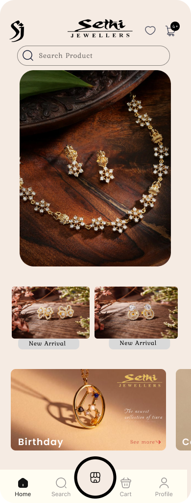
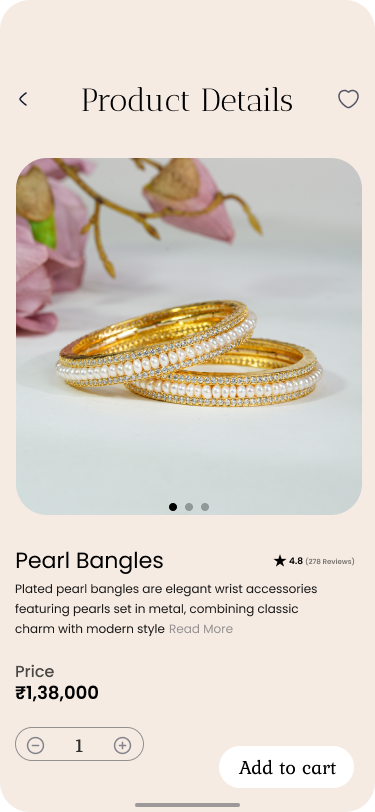
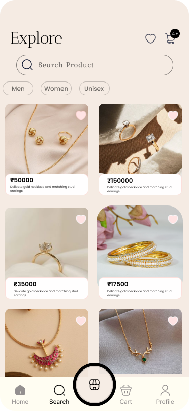
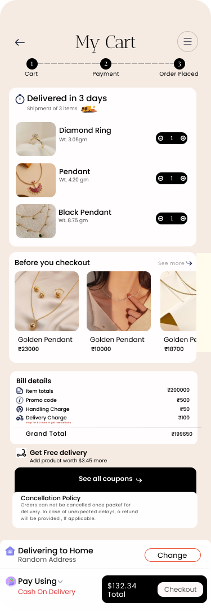

Customer
Explore freely, understand the product and feel confident before committing.
SETHI JEWELLERS
A digital jewellery shopping experience designed for discovery, confidence and gifting.

Sethi Jewellers is rooted in craftsmanship, trust and personal relationships. This project explored how those qualities could translate into a mobile-first digital shopping experience without making the interface feel like generic e-commerce.
Jewellery is not just a product. It is often a considered purchase, a gift, or something attached to a milestone. The experience therefore had to balance visual desire with confidence in the decision.
Three needs had to work together.
Explore freely, understand the product and feel confident before committing.
Communicate craftsmanship, authenticity and a sense of occasion.
Make discovery, gifting and checkout clear enough to support conversion.
The thoughtful jewellery buyer.
“I want something that feels special — for me, or for someone I love.”
The core journey was kept simple: reduce uncertainty at each step while keeping discovery visually rich.
Rather than adding features for the sake of richness, I focused the concept around the moments where a jewellery buyer needs the most confidence.
Lead with product imagery and curated collections so the experience starts with desire, not a catalogue.
Surface price, ratings, product information and delivery cues close to the decision point.
Make the experience useful for both self-purchase and emotionally significant gifting.
Keep cart, payment and delivery information structured so the final step feels predictable.
Low-fidelity exploration helped establish the information hierarchy before introducing the visual language of the brand.
ELEGANT · INTUITIVE · EFFORTLESS
From the first glance to the final payment, the interface keeps product discovery visual while making important information easy to find.



A short screen recording of the designed shopping flow, from browsing through checkout.
This project helped me understand how thoughtful UI/UX can simplify a complex, high-consideration purchase. The goal was not to make jewellery feel transactional, but to create a digital journey that supports discovery, reassurance and the emotion behind the purchase.